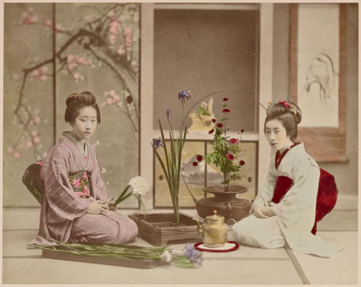

“Arranging flowers”
Japan: Described and Illustrated by the Japanese (1897)
While we are sipping our tea [at a silk shop in Edo], the whole floor has become strewn with silks, crapes, and embroideries of every description of texture, shade of colour, and brilliancy of pattern. The silks in Japan are said to be inferior to those of China, though to our inexperienced eyes they looked quite equal to them. The gauzes and crapes would create a furor in England, particularly the former, as the stuff is made of so stiff a material that it would answer the double purpose of a cage and a dress. The embroideries were infinitely superior to anything that China can produce; they are usually worked on satin, and remind one rather of the Gobelin tapestry than of any modern embroidery. Many of the patterns and combinations of colour show great taste. The Japanese are remarkable for the simplicity and elegance of their taste in matters of dress or ornament, as a general rule avoiding gaudy patterns, or any thing which, in the vernacular of the day, is known as “loud.” ...
We quite regretted that all these curiosities of dress and material should be displayed before persons so little able to appreciate them. There can be no doubt that the contents of a Japanese silk-mercer’s shop, transported to England, and exhibited to the female public of our metropolis, would draw large and fashionable crowds. While we were in despair about what to buy, and lost in perplexed speculation as to what would do for dresses.
Narrative of the Earl of Elgin’s Mission to China and Japan (1859)
Among other things, [the students at the Bishop Poole Memorial Girls’ School in Osaka] learn the arrangement of flowers, which is a serious study in Japan, requiring a two years’ course of lessons before it can be mastered. A careful design is carried out in each group or spray of flowers, so that in a branch of cherry blossom, for instance, the angles of each twig seem always to occur in a given place. The other twigs are probably cut away to ensure this, the somewhat stiff attitude of the branch in its vase being secured by a tiny crutch or two placed in the stem of the vase. Each flower has a hidden meaning, and as much attention is bestowed on the effect of the shadows as on that of the actual specimens. The Japanese never attempt to mass flowers together, nor fail to include a few grasses, or a spray of leaves in their bouquets.
Japan As We Saw It (Bickersteth) (1893)
I often wondered what became of the rich and decorated utensils and furniture displayed in the shops, as I never once saw any such in use among the people, nor even at the feasts of the higher classes: invariably the different meats were served on plain black lacquer ware. ... But although the more costly and decorated articles of their manufactures are never used and seldom displayed, yet their inner chambers, or large trunks, are almost sure to contain them. Those droll little cabinets of lacquer and gold, with drawers and recesses, of all shapes and sizes; the richly embossed bowls, cups and boxes; indoos, needzgees, images carved in wood or ivory, or cast in metal; gorgeous silks and satins; embroidery of gold and silver; tapestry; rich keremons and obés; wonderful porcelain; kani-boxes and saki bottles: such are a few of the varied contents of those trunks, and which are generally obtained as marriage presents, or by that social interchange of homage and cordiality which is practised by the Japanese at the New Year, and on other remarkable feasts of their Calendar.
Japan, the Amoor, and the Pacific (1861)
Between Kanagawa and Yokahama is a pleasant walk, affording good opportunity to note the peculiarities of the country and the industry of the inhabitants. ... The inhabitants were obliging, and though accustomed in a measure to strangers, were not the less curious, and surrounded us immediately, if we stopped for a short time. Being invited into her house by an old lady, I was kept occupied for two hours by her and her numerous friends in writing mottoes and names upon fans, which were brought forward in such numbers by different persons, that I thought I should never come to an end. Writing on fans is highly esteemed among the people, especially in a strange language: many times I have watched a calligraphist flourishing his brush, and thus ornamenting these indispensable appendages of a Japanese toilette.
Japan, the Amoor, and the Pacific (1861)
The shops of lacquer-ware proved places of great temptation, though we afterwards found that the articles purchased at Yokohama were of a much superior manufacture and more lasting quality, greatly excelling those produced in China, the gilding being brighter, the ornamental work better defined, and the finish more perfect.
As we were recommended to purchase porcelain in Nagasaki, where the finest articles of this description are manufactured, we made large investments in vases, plates, &c., &c., which, together with the egg-shell china cups and saucers, so transparent and delicate, form, now we are far from the land of the Tycoon, quite a valuable collection to us.
A Lady’s Visit to Manilla and Japan (1863)
We examined the toy-shops ... and bought wonderful jacks-in-the-box; representations of animals, beautifully executed in straw; models of norimons and Japanese houses, as neatly finished as Swiss models; figures, some of them more humorous than decent, carved in wood; little porcelain figures, whose heads wagged and tongues shot out unexpectedly; tortoises, whose head, legs, and tail were in perpetual motion; ludicrous picture-books, grotesque masks and sham head-dresses of both sexes. Enough absurd contrivances were here exhibited to create a revolution in the nurseries of England.
Narrative of the Earl of Elgin’s Mission to China and Japan (1859)
All sorts of toys were abundant, and some of them were most ingenious and pretty. There were glass balls, with numerous little tortoises inside them, whose heads, tails, and feet were in constant motion; humming-tops, with a number of trays inside, which all came out and spun round on the table when the top was set in motion; and a number of funny things in boxes like little bits of wood shavings, which perform the most curious antics when thrown into a basin containing water. Dolls of the most fascinating kind, with large, shaved, bobbing heads, crying out most lustily when pressed upon the stomach, were also met with in cartloads. One little article, so small one could scarcely see it, when put upon hot charcoal, gradually seemed to acquire life and animation, and moved about for all the world like a brilliant caterpillar. This large trade in toys shows us how fond the Japanese are of their children.
Yedo and Peking (1863)
Japanese dolls (nin-gi-yo, “resembling men”) are very worthy of consideration. They are as much like real babies as anything can possibly be, and we are frequently deceived by them as we see the women carrying large dolls in their arms. The best dolls are made in Ki-o-to. They are of wood, with real hair. The others are made of a kind of composition and are very frail, being in constant danger of losing heads and limbs. A-sa-ku-sa is the principal mart for dolls in Tokio. Some of the dolls there are beautifully dressed like grown ladies, with several changes of headgear. The women in the ya-shi-kis play with these large dolls, dressing them in fine clothes, and taking them out with them when they go to call. The little girls have tiny futons and pillows for their dolls, and little dishes, but they are just as fond as American children of playing with broken plates and cups and all sorts of make-believe things.
The Sunrise Kingdom (1879)
Arima is a quiet village, but has some reputation for two things—its medicinal waters and its manufacture of baskets. The waters seem to be of a chalybeate nature: they are hot, and are made to flow from the natural springs into two wooden bath-houses in the main street of the village. ...
As to the basket-work, it seems to be the occupation pursued in every two out of three houses in the village. At any hour of the day the cottagers may be seen, seated tailor fashion in their front rooms, splitting, scraping, plaiting, and fitting the all-useful bamboo. Most of the baskets are perfect models of taste and neatness; and the variety of their patterns, and the lightness, firmness and cheapness of the work, speak volumes for the patient industry, natty fingers, and native taste of these rustic artisans.
Round the World in 1870 (1872)
On our way back to the hotel [in Kyoto] we visited a silk and crêpe factory. Its employés were all seated on the floor before low frames containing their work, which looked more like delicate painting than silk embroidery. Yet we were told that this modern embroidery falls far below the standard of old days, and we could see it for ourselves from some fragments of old festival dresses that we picked up at another shop. The owner begged us to buy them, saying it would be impossible to reproduce them now, and would cost five times as much as in the old days even to make the attempt.
Japan As We Saw It (Bickersteth) (1893)
Nagasaki shops are very foreign in their arrangements, with counters, chairs and tables as prosaic as those of Bond Street; but we found plenty of genuine Japanese goods in them, including fine specimens of tortoiseshell and lacquer-work. In one of the tortoiseshell shops, for instance, there was a complete model of a large steamer of the Nippon Yusen Kwaisha Line, a sister boat to the Kobe Maru, in which we had come through the Inland Sea. Every detail of it was faithfully represented in the tortoiseshell. They told us at Kobe that it is by heating the small shells that they can weld them into what is apparently one large one, twisting them also into the tiny wheels and cables of a model such as we saw that day.
Japan As We Saw It (Bickersteth) (1893)
One of the most beautiful arts of Japan is painting upon porcelain, and we next paid a visit to a celebrated artist, Maizan, and were shown girls and men painting upon Satsuma ware. One small basin had already received 1,008 miniature butterflies, almost all different, and scarcely perceptible to the eye; but seen through a magnifying glass they were most lovely in colouring. The artist knew the exact number he had painted. The very best work is most expensive, and we purchased one tiny piece with coloured chrysanthemums, wistaria and butterflies, for 12 ½ dollars. This minute painting is most trying for the eyesight.
Impressions of a Journey Round the World (1897)
Cloisonné, or shippo, is a kind of enamel, having a very beautiful polish and colours, and the process of manufacture is a long and intricate one. First the coppersmith moulds and cuts the copper into the shape desired, then wire is fixed on the piece according to the design already drawn. The spaces between the wire are then filled in with enamel of different colours and fired. This firing process is repeated seven or eight times, and each time more enamel is filled in. After the firing is completed, the piece passes into the polishers’ hands, and is then turned out as a finished specimen of cloisonné.
Impressions of a Journey Round the World (1897)
The box-making industry is an art in a land where every box is a treasure to encase another treasure. No nation puts up a lunch as does the Japanese, in a smooth round box embedded with leaves. The condiments are in a tower of lesser boxes, united by wooden thongs, and the butter, pepper, salt, mustard, each has its separate box.
All sorts and shapes of boxes are turned out in the little shops of Nikko, and with delight I watched the nimble fingers fly. One industrious old man recalled the “ancient arrow-maker” of “Hiawatha,” as he sat in his door ceaselessly plying his trade, working as zealously and as honestly as the skilled artist who decorated the valued cloisonné. He worked behind horn glasses, which were held to his ears by loops of string. He fastened the pieces down with his toes, and made the boxes in piles of halves, using little wooden pegs in place of clumsy nails. From a bundle of sticks he drew the pieces, and tacked them to the squares of cedar, and as the halves grew in piles, the bundles of chips diminished. The two parts were afterward deftly fitted together. This was his patient life, as the hours and the days rolled away, to drive the wooden pegs, and pound the tiny pieces, and polish them to smoothness. He could speak no word with me, and only noticed me with a kindly nod and smile. Long I sat in the doorway, fascinated by the steady growth of boxes, whose neatness was my admiration. This was a trade for all Japan, minus any big factory with whistles and engines and endless bands. The dainty boxes that went out from the Lilliputian homes would carry treasures of art to all the earth.
A Woman Alone in the Heart of Japan (1906)
◀ WrestlingAesthetics ▶